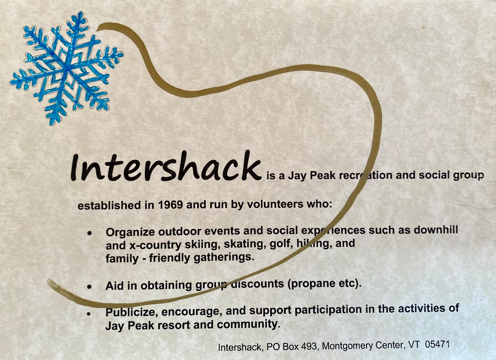
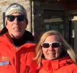
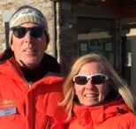
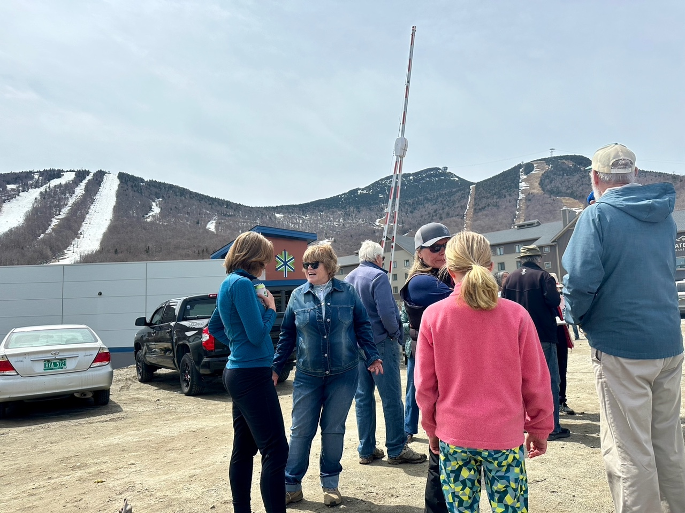
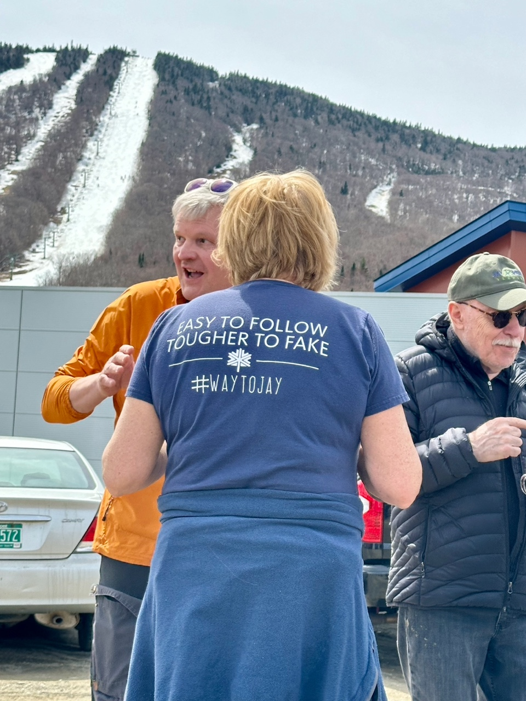
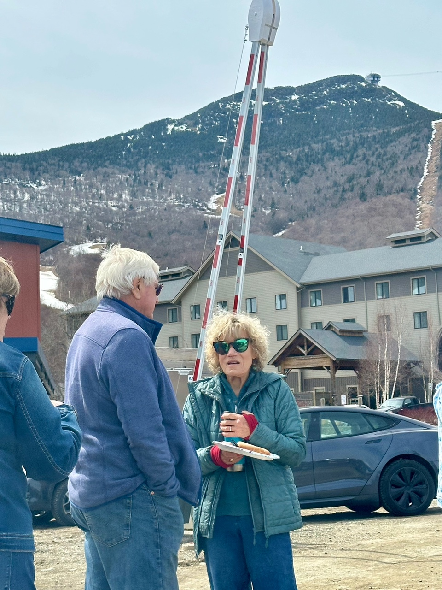
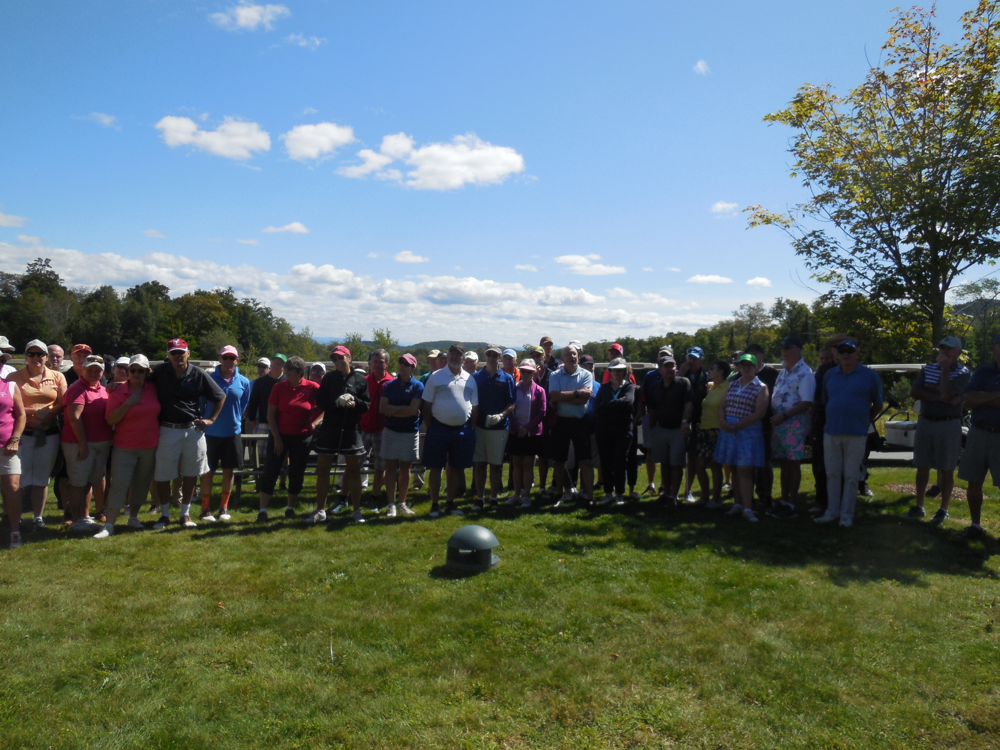
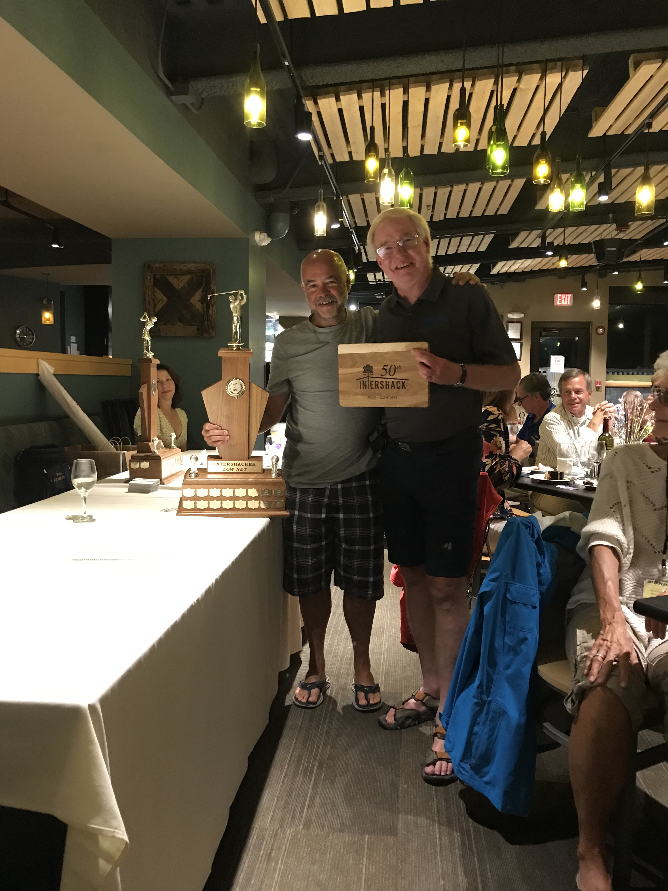

Volunteer Committee Members

Laurie Holdron
Social Events

Chuck Jaschke
Treasurer

Anne Ireland
Communications

Bill Wienand
Propane Rep

Ginny Malcolm
Membership

Mark and Claire Draper
Winter Downhill Events Organizers
| ► | We are looking for volunteers to help on the Committee. |
| ► | email us at intershackgroup@gmail.com |
Laurie Holdron
Social Events

Chuck Jaschke
Treasurer
Anne Ireland
Communications
Bill Wienand
Propane Rep
Ginny Malcolm
Membership

Mark and Claire Draper
Winter Downhill Events Organizers
Annual Labor Day Golf Tournament and Dinner - Jay Peak Sunday, August 31 starting at 11am
PLEASE respond by Friday August 15 if you are participating in golf, golf and dinner, or just dinner.
RSVP to Chuck Jaschke:@ chuckjaschke@gmail.com
Chuck will organize golf groups and tee times. Please let Chuck know if you have a 4some and the names of others to include in your group. $69 per person (including cart). Canadian Cash taken at Par. Pay at the pro shop directly PRIZES will be awarded!
Cocktails/Dinner – will be in the Clubhouse Grill and partly subsidized for Intershack members. There will be 3 choices of menu. (details to follow) Please indicate if you have children who want to order off a children’s menu. This event is open to all Intershack members, past members and guests.
We look forward to seeing you there!
The Intershack Crew
Jay Peak Tail Gate Party Saturday April 26, 2025
The Intershack tradition continued!
The weather was very wintery but thanks to Claire and Mark, our tradition of participating in the Jay Peak end of season tailgate event lives on!
It was a smaller turnout overall and we appreciated the hardcore Intershackers who participated and enjoyed the BBQ.
Perhaps the sun will shine on us next year!
The InterShack Crew


Intershack West Saint Patrick's Day - March 13, 2025
Another great St. Patrick's Dinner/Party for those Shackers that have moved to Whistler - Slainte!
Saint Patrick's Day Cocktail Party - Saturday March 15, 2025
The 2025 Intershack St. Patrick’s party, held at the Jay Peak hotel, was filled with lots of fun, lots of green attire, lively conversations, pizza and silly shenanigans.
Elaine Thoms headed up three activities for the crowd- the Green Hat toss, the Irish Quiz and the best dress. Winners were Matt and Micah for the hat toss, John for the Irish Quiz and Chris & Lauri for the best dress.
Thanks to Jay Peak for accommodating our group and thanks to our barman Bryan for his friendly and professional service.!!


Valentine's Day Dinner at the Inn


On February 8 Intershackers experienced a fun Valentine’s Day evening and delicious dinner at The Inn after a snowy and wonderful day at Jay Peak
– which really does have the most snow in the east, spectacularly this winter.
The evening kicked off in The Inn’s unique lounge with warm greetings amongst old and new friends and tasty cocktails and appetizers. Games and raffles were held and lively conversations were heard throughout the evening.
The Inn provided an inviting venue with warm hospitality from all its staff.


Intershack Gives Back (Again)!
To help make Christmas brighter for less fortunate families in our local communities, Intershack has made donations to two local food banks. The Montgomery Food Pantry and the Jay Area Food Shelf each received a cheque for $1,500.
Not only does your membership fee provide you with opportunities to participate in myriad social activities, and receive discounts for home-heating fuel through Intershack’s preferred rate program with Fred’s Energy, you can be proud of your contributions to those in need.
THANK YOU ALL FOR MAKING THIS POSSIBLE.
Wishing everyone all the best for 2025! >
Skating & Pizza Party Friday Dec 27th, 2024
A wonderful, snowy Christmas week ended with a multi-generational skating and pizza party at the Jay Peak Arena on Friday December 27th. Family, old friends and new friends made for a memorable event with perfect ice for skaters and lots of pizzas and snacks for the hungry


Click on Photos for larger images.
Welcome Cocktail Party - Sat November 30, 2024
We had our Welcome Cocktail Saturday November 30th at the Tram Haus bar. It was Jay’s opening weekend and we were gifted with some unexpected snow which made for great early winter skiing. It was wonderful to greet old friends and make some new friends as we enter our 56th year of Intershack.
Laurie welcomed fellow Intershackers and provided an update on events and activities for the 2025/2025 season and Jamie Stenger provided the group with an update on Jay Peak resort.
Intershack Golf Tournament - Sunday September 1, 2024
We kicked off the 2024-2025 year with our Annual Labor Day Golf Tournament at Jay Peak Resort.
The weather cooperated and the golfers had a great time.
Cocktail hour was enjoyed by all!

Annual Jay Peak Tail Gate Party - Saturday April 27, 2024 Noon - Stateside Parking Lot

{kind=link}
Thanks for being there - hope that you enjoyed the food/partying as much as we did!
 
{kind=link}
{kind=link}
Click on Photos for larger images.
41st George Syrovotka Race
Sunday March 24, 2024 - Lower Haynes
Thank you to all the participants and helping the fight against Leukemia.
Intershack's 50th Anniversary Celebration
- Labour Day Weekend 2019 - Truly Epic!
The 3 day Intershack celebration was, well, lets say it again, truly epic.
Not going to write a lot of words to descibe it - the 200+ that were there know what it was.
So many great friends, memories and good times were made and shared.
Hopefully everyone will keep in touch!
If you have't received the email sharing photos from the event, email intershack50th@gmail.com to get on the list!
Click HERE to view the Intershack 50th Group Video (produced by Black Box Productions Ltd.) on Vimeo.
25th Fall Golf Classic at Jay Peak Golf Course
Intershack's 25th Annual Fall golf tournament and dinner was held as part of the 50th weekend. Almost 100 shackers turned out on a beautiful day for some good competition.
It was a great day and evening and a fitting conclusion to the 50th weekend.
Congratulations to this year's winners - especially Leslie Syrovotka and Kate Bradley who won 1/2 season ski passes for 2019-2020 !
| Award | Winners | |
| Low Gross | Men - Gary Griffiths Women - Lorraine Leduc |
|
| Low Net - Intershacker | Men - Guy Quesnel Women - Lynda Fraser |
|
| Longest Drive | Men - Tomas Syrovotka Women - Louise Aiken |
|
| Closest to the Pin | Men - John Cheffins Women - Paddi Griffiths |
|
| Best Putter | Men - Palu Toppi Women - Christine Tully |
 
{kind=link}
{kind=link}
Intershack is on Facebook
Membership Signup
Upcoming Events
Past Events
| ► | Please like us on Facebook. |
| ► | IntershackJayPeakVT |
Membership Signup
| ► | Click here to register. |
Upcoming Events
| ► | Sunday August 31, 2025: Annual Golf Tournament. Jay Peak |
Past Events
| ► | April 26, 2025: Tailgate Party. Stateside Parking Lot |
| ► | March 15, 2025: St. Patrick's Day Cocktail Party. Haynes Room - Jay Peak Hotel |
| ► | Saturday February 8th 2025: Valentine’s dinner/party. Inn in Montgomery Center |
| ► | Friday December 27th 2024: Skating & Pizza Party. Jay Peak |
| ► | November 30, 2024: Welcome Cocktail Party. Tram Bar, Jay Peak |
| ► | September 1, 2024: Intershack Fall Golf Classic. Jay Peak |
| ► | April 27 2024: Tailgate Party. Stateside Parking Lot |
| ► | March 24, 2024: George Syrovotka 41st Ski/Snowboard Race. Jay Peak |
| ► | Aug 30 - Sep 1, 2019: 50th Anniversary Celebration. Jay Peak |
| ► | Sun Sept 1 2019: 25th Fall Golf Classic. Jay Peak Golf Course. |